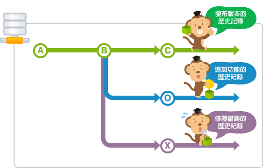
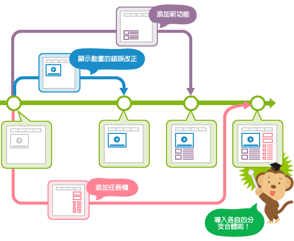

分支 (branch)
什麼是分支？
在入門篇，已經簡單的講解了關於Git的基本使用方法。在發展篇呢，首先要講解一下關於分支的使用方法和操作。
在開發軟體時，可能同時會有多人在開發同一功能或修復錯誤，也可能會有多個發佈版本的存在，並且需要針對每個版本進行維護。
為了能支援同時進行數個功能的增加或版本控制，Git具備了分支的功能。
什麼是分支？
分支是為了將修改記錄的整體流程分開儲存，讓分開的分支不受其他分支的影響，所以在同一個數據庫裡可以同時進行多個不同的修改。

分開的分支還是可以和其他分支合併的。
下圖是使用分支進行同時作業的圖示。
為了讓群組的成員不受其他成員的影響，您可以在主要分支建立自己專用的分支。完成作業的成員們，將自己分支的修改導入到主要分支，這樣大家都可以不受其他成員的影響，導入自己的修改內容。而且每個提交的歷史記錄都會被儲存，當發生問題時，可以更容易找到發生問題的地方。

Master分支
在數據庫進行最初的提交後，Git會建立一個名為master的分支。之後的提交在切換分支之前都會增加在master分支裡。